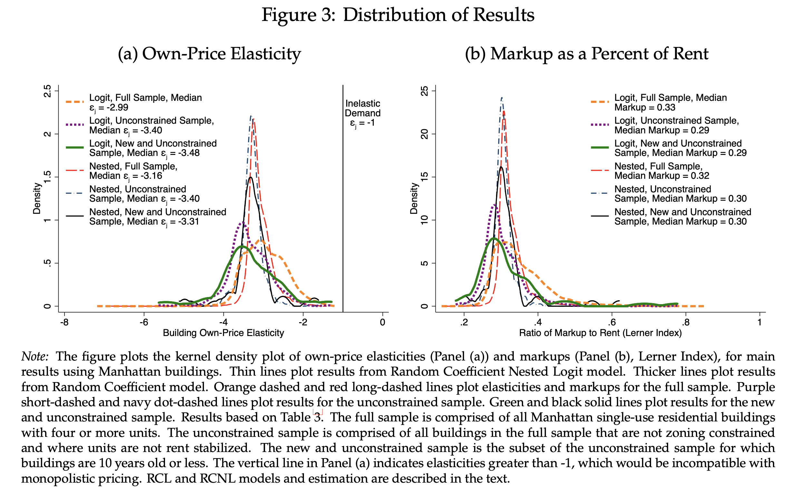

PDF links
Abstract
We investigate the sources, scope, and implications of landowner market power. We show how zoning regulations generate spillovers through increased markups and derive conditions under which restricting landownership concentration reduces rents. Using new building-level data from New York City, we fnd that a 10% increase in ownership concentration in a Census tract is correlated with a 1% increase in rent. Market power is substantial: on average, markups account for nearly a third of rents in Manhattan. Furthermore, pecuniary spillovers between zoning constraints and markups at other buildings are appreciable. Up-zoning that results in 417 additional housing units at zoning-constrained buildings reduces markups on policy-unconstrained units and generates between 5 and 19 additional units through increased competition.
BibTeX citation
@techreport{watson_istherenttoohigh:2021,
Author = {Watson, C. Luke and Ziv, Oren},
Month = {3},
Title = {Is the Rent Too High? Land Ownership and Monopoly Power},
Type = {Manuscript},
Year = {2021}}